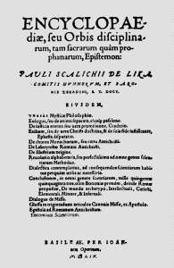
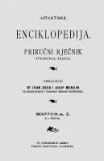

Enciklopedija je djelo u kojem se, abecednim ili kakvim drugim metodičkim slijedom, okupljaju i sustavno obrađuju činjenice i spoznaje o svim ljudskim znanjima (opća enciklopedija) ili sva građa jedne znanosti, umjetnosti ili područja (strukovna enciklopedija ili posebna enciklopedija). Leksikon je informativni priručnik u kojem se u abecednom ili strukovnom rasporedu donosi pregled ukupnoga ljudskog znanja, općeg je sadržaja (opći leksikon) ili daje pregled isključivo stručnoga znanja ograničenoga na određeno područje (strukovni leksikon). Od enciklopedije se razlikuje po kraćim i strožim definicijama i po tome što pruža najosnovnije podatke. U leksikonu se podatci izlažu u velikom broju kratkih članaka.
Antički leksikografi i glosografi svakako su nezaobilazni prethodnici, ako već ne i začetnici enciklopedijske literature. Oni su obavili dvije nužne predradnje: izdvajanje pojedinih imena i natuknica i njihovo alfabetsko (ili abecedno) raspoređivanje. Iako antika nije poznavala pojam enciklopedije u novijem smislu, neki povjesničari kulture smatraju – uz isticanje važnosti antičkih leksikografa i glosografa kao prethodnika – da je već i Aristotelovo cjelokupno filozofsko djelo u svojoj biti – enciklopedijsko. U bizantskom razdoblju, uz bogate glosografske priručnike, nastaju i sustavni popisi geografskih imena.
Složenica enciklopedija u modernim se europskim jezicima javlja tek u XVI. st. Europsko srednjovjekovlje nastavlja tradiciju prije svega latinskih enciklopedijskih djela. No uzlet se dogodio tek u XVIII. st. koje je nazvano stoljećem enciklopedizma ili čak i zlatnim razdobljem europske enciklopedike. Kao primjerna izdanja koja su na poseban način i pripremala tu epohu, ali i bila njezin dio svako na svoj način, uzimaju se dvije edicije: Chambersova Enciklopedija i Zedlerov Leksikon.
Chambersovo djelo (Ciklopedija) poslužilo je kao osnova za najpoznatiju među europskim enciklopedijama, glasovitu Francusku enciklopediju koja je po svojoj važnosti i značenju postala paradigmatskom. To je djelo proizvod zajedničkoga rada većega broja enciklopedijskih pisaca, koji su u povijesti i ostali pod imenom enciklopedisti (kako se npr. nazivaju i petorica najpoznatijih: Jean-Jacques Rousseau, Voltaire, Denis Diderot, Jean Baptiste Le Rond D’Alambert i Claude Adrien Helvétius). Enciklopedisti su nedvojbeno imali jednu zajedničku poveznicu: korjenitu oporbu tiraniji i despotizmu, polazeći od pojma slobode zasnovanoga na prirodnome pravu.
U istome stoljeću objavljeno je 1771. i prvo izdanje britanske enciklopedije (Britanska enciklopedija ili Rječnik umjetnòsti i znanòsti – The Encyclopaedia Britannica or Dictionary of Arts and Sciences). Tu se pojedina područja razlučuju u sustav odvojenih rasprava, a obrađuju se u abecednome poretku, povezano s pripadnim znanostima. U XX. st. izlaze djela u tradiciji velike Francuske ili Britanske enciklopedije, kao Encyclopaedia Americana, Enciclopedia Italiana, Enciclopedia Espasa i Boljšaja Sovetskaja Enciklopedija.
Opći leksikon razvio se od danas zastarjela pojma konverzacijski (ili razgovorni) leksikon koji je izvorno donosio znanja iz svih područja potrebnih za uspješno vođenje razgovora. Konverzacijski se leksikon ipak po svojem obliku razlikuje od enciklopedijskih leksikona. Dok se u prvome tematika sažeto obrađuje u velikom broju kratkih članaka, u drugome tipu leksikona određenomu broju temeljnih, »ključnih« pojmova posvećuju se i veliki sintetički članci. Suvremeni konverzacijski leksikon dobio je konačan oblik zahvaljujući Brockhausovim izdanjima, ali i mlađim njemačkim priručnicima kao što su Meyer, Herder i Bertelsmann. Europski enciklopedijski priručnici razvijali su se u Francuskoj (Grand Larousse encyclopédique, Dictionnaire encyclopédique Quillet), Nizozemskoj (Winklers Prins) i drugdje. U Americi su početkom XIX. st. važnu ulogu odigrali rječnici i leksikoni Noaha Webstera.

Encyclopediae seu orbis disciplinarum tam sacrarum quam profanarum epistemon, 1559.
Hrvatska leksikografija i enciklopedika ima petostoljetnu tradiciju. Zapravo se i sama riječ enciklopedija u modernom značenju prvi put javlja upravo u Hrvata. Zagrepčanin Pavao Skalić u djelu Znalac enciklopedija ili kruga znanosti kako svetih tako i svjetovnih (Encyclopediae seu orbis disciplinarum tam sacrarum quam profanarum epistemon, 1559) rabi termin enciklopedija u današnjem smislu. Od XVI. do XIX. st. u Hrvatskoj ima mnoštvo leksikografskih, ali manjkaju prava enciklopedijska djela. Prvi je pokušaj Hrvatska enciklopedija (1887–90) u dva sveska, objavljena u Osijeku, koje su autori bili Ivan Zoch i Josip Mencin.

Hrvatska enciklopedija, 1887.
U Hrvatskoj se rano javlja priručnik leksikonskog tipa. Budući da u opće enciklopedijske priručnike u pravilu ulaze i članci o značajnim osobama, vrlo rano nastali su i biografski zbornici, koji mogu biti uređeni kao biografski leksikoni (biografski rječnici). Biografski leksikon zbirka je životopisa izabranih pojedinaca, obično navedenih abecednim redom, koja nastoji dati zaokružen pregled određenoga razdoblja, zemljopisnoga područja ili neke uže zajednice uz koju su oni vezani. Biobibliografski leksikoni (biobibliografije) uz životopise uključuju i literaturu o spomenutim osobama.

U Zagrebu se 1950. osniva Leksikografski zavod FNRJ Uredbom Savezne vlade, s glavnom zadaćom da radi na izradbi Enciklopedije Jugoslavije. Uredbom Vlade Republike Hrvatske 1991. Leksikografski zavod »Miroslav Krleža« (LZMK) radi kao posebna ustanova od interesa za Republiku Hrvatsku u znanosti i kulturi. Utemeljitelj, direktor i glavni redaktor Miroslav Krleža bio je od 1950. do 1981. na čelu Zavoda surađujući usko s Matom Ujevićem, iskusnim hrvatskim enciklopedistom. Tijekom svoga sedamdesetogodišnjeg djelovanja LZMK je izdao golem broj leksikografskih, enciklopedijskih, geografskih i kartografskih te praktičnih i popularnih djela.
Na stranicama Leksikografskoga zavoda Miroslav Krleža možete pronaći popis objavljenih enciklopedija, leksikona, rječnika i atlasa, kao i mrežna izdanja Hrvatske enciklopedije i ostalih publikacija objavljenih u proteklih sedamdeset godina postojanja Zavoda.